9. Comparing Pseudoabsence Methods in Species Distribution Modelling
[author name]
2026-07-14
Source:vignettes/articles/09_pseudoabsence_comparison.Rmd
09_pseudoabsence_comparison.RmdOverview
This document compares four pseudoabsence generation strategies for modelling the distribution of Araucaria angustifolia (Brazilian pine), a critically endangered conifer endemic to the Atlantic Forest and Southern Cone. Pseudoabsences — locations assumed to be unoccupied — are required by most SDM algorithms that expect both presence and absence records. Their placement profoundly influences model performance and spatial predictions.
The three strategies evaluated here are:
| Strategy | Key assumption |
|---|---|
| Random | Absences can occur anywhere in the study area |
| Environmental constraint (BIOCLIM/SRE) | Absences are drawn from regions outside a surface range envelope |
| Geographic constraint | Absences must be separated from presences by a minimum distance |
All other modelling decisions (algorithms, cross-validation scheme, predictor selection) are held constant so that observed differences in the final maps are attributable solely to the pseudoabsence approach.
1 · Setup
1.2 Load built-in data
caretSDM ships with occurrence records and a set of
bioclimatic predictors for A. angustifolia. We load them here
and take a quick look at their structure.
# Occurrence records: a data.frame with columns lon, lat
head(occ)## species decimalLongitude decimalLatitude
## 327 Araucaria angustifolia -4700678 -3065133
## 405 Araucaria angustifolia -4711827 -3146727
## 404 Araucaria angustifolia -4711885 -3147170
## 310 Araucaria angustifolia -4717665 -3142767
## 49 Araucaria angustifolia -4726011 -3148963
## 124 Araucaria angustifolia -4727265 -3148517
# Build occurrences_sdm object
oc <- occurrences_sdm(occ, occ_crs = 6933)
# Bioclimatic data covering the species' range retrieved using the following code:
WorldClim_data("current", variable = "bioc", resolution = 10)
# Import bioclimatic data
bioc <- raster::stack(list.files("current", pattern = ".tif", full.names = T)[c(1, 14, 4)])
names(bioc) <- c("bio1", "bio4", "bio12")
# Build sdm_area object
sa <- sdm_area(bioc,
output_crs = 4326,
crop_by = buffer_sdm(occ, size = 500000, occ_crs = 6933)
) |>
add_scenarios()2 · Standardised modelling workflow
A helper function encapsulates the entire pipeline — from
constructing the sdm_area object through to a final
continuous suitability map. The only argument that changes across runs
is pseudoabsence_method, which controls how pseudoabsences
are generated.
# Build workflow function
run_sdm <- function(pseudoabsence_method, ...) {
set.seed(1)
# Merge sdm_area and occurrences_sdm and perform pre-processing, processing and projecting.
i <- input_sdm(oc, sa) |>
data_clean() |>
multicollinearity_sdm(method = "vifcor", th = 0.5) |>
pseudoabsences(
method = pseudoabsence_method,
variables_selected = "vif", ...
) |>
train_sdm(
algo = c("naive_bayes", "kknn", "svmRadial", "nnet", "rf", "fda", "glm"),
ctrl = caret::trainControl(
method = "repeatedcv",
number = 4,
repeats = 10,
classProbs = TRUE,
returnResamp = "all",
summaryFunction = summary_sdm,
savePredictions = "all"
),
variables_selected = "vif"
) |>
predict_sdm(th = 0.8) |>
ensemble_sdm()
return(i)
}3 · Run models with each pseudoabsence strategy
Each call below is identical except for
pseudoabsence_method. The geographic constraint is applied
as a custom method, with a 2-degree buffer around presences. The random
and Bioclim (SRE) methods are built into caretSDM and can
be invoked by name.
# Run workflow with random pseudoabsences
sdm_random <- run_sdm(pseudoabsence_method = "random")
# Run workflow with pseudoabsences obtained outside a bioclim (SRE) envelope
sdm_bioclim <- run_sdm(pseudoabsence_method = "bioclim")
# Run workflow with a custom pseudoabsences method, creating a 2-degree-wide buffer.
buffer_pa_custom <- function(env_sf, occ_sf, buffer_dist = 2) {
sf::sf_use_s2(FALSE) # Disable s2 geometry for buffering
# Create buffer around occurrence points
buffer <- sf::st_buffer(occ_sf, dist = buffer_dist)
# Union buffers into a single geometry
buffer_union <- sf::st_union(buffer)
# Identify cells outside the buffer
outside_buffer <- sf::st_difference(env_sf, buffer_union)[, 1]
# Randomly extract cell_ids outside the buffer
pa_ids_sample <- sample(outside_buffer$cell_id, nrow(occ_sf))
return(pa_ids_sample)
}
sdm_buffer <- run_sdm(pseudoabsence_method = buffer_pa_custom)4 · Evaluate model performance
Cross-validated performance metrics (ROC/AUC) are extracted for each run. Because all other settings are fixed, differences in these metrics reflect the influence of pseudoabsence placement on model calibration.
# Extract cross-validated metrics stored inside each sdm object
perf_random <- get_validation_metrics(sdm_random)[[1]] |>
as.data.frame() |>
dplyr::mutate(method = "Random") |>
dplyr::select(c("method", "algo", "ROC", "ROCSD"))
perf_bioclim <- get_validation_metrics(sdm_bioclim)[[1]] |>
as.data.frame() |>
dplyr::mutate(method = "Environmental Constrain") |>
dplyr::select(c("method", "algo", "ROC", "ROCSD"))
perf_buffer <- get_validation_metrics(sdm_buffer)[[1]] |>
as.data.frame() |>
dplyr::mutate(method = "Geographical Constrain") |>
dplyr::select(c("method", "algo", "ROC", "ROCSD"))
perf_all <- dplyr::bind_rows(perf_random, perf_bioclim, perf_buffer)
# Show mean values:
# Extract cross-validated metrics stored inside each sdm object
mean_perf_random <- mean_validation_metrics(sdm_random)[[1]] |>
as.data.frame() |>
dplyr::mutate(method = "Random") |>
dplyr::select(c("method", "algo", "ROC", "ROCSD"))
mean_perf_bioclim <- mean_validation_metrics(sdm_bioclim)[[1]] |>
as.data.frame() |>
dplyr::mutate(method = "Environmental Constrain") |>
dplyr::select(c("method", "algo", "ROC", "ROCSD"))
mean_perf_buffer <- mean_validation_metrics(sdm_buffer)[[1]] |>
as.data.frame() |>
dplyr::mutate(method = "Geographical Constrain") |>
dplyr::select(c("method", "algo", "ROC", "ROCSD"))
mean_perf_all <- dplyr::bind_rows(mean_perf_random, mean_perf_bioclim, mean_perf_buffer)
mean_perf_all## method algo ROC ROCSD
## 1 Random fda 0.8759370 0.087241201
## 2 Random glm 0.7208164 0.059768308
## 3 Random kknn 0.8630350 0.053710483
## 4 Random naive_bayes 0.8790531 0.050385223
## 5 Random nnet 0.7343957 0.122230734
## 6 Random rf 0.8776543 0.043331161
## 7 Random svmRadial 0.8994953 0.044711569
## 8 Environmental Constrain fda 0.9928639 0.081557130
## 9 Environmental Constrain glm 0.7725747 0.060104982
## 10 Environmental Constrain kknn 0.9720469 0.024826767
## 11 Environmental Constrain naive_bayes 0.9954687 0.010576544
## 12 Environmental Constrain nnet 0.8670637 0.161781179
## 13 Environmental Constrain rf 0.9963111 0.006540733
## 14 Environmental Constrain svmRadial 0.9985059 0.003360904
## 15 Geographical Constrain fda 0.9327909 0.083751829
## 16 Geographical Constrain glm 0.7658892 0.054406189
## 17 Geographical Constrain kknn 0.9296304 0.043344080
## 18 Geographical Constrain naive_bayes 0.9405870 0.036677821
## 19 Geographical Constrain nnet 0.8212010 0.149724345
## 20 Geographical Constrain rf 0.9506110 0.030391360
## 21 Geographical Constrain svmRadial 0.9514008 0.031823030
# Visualise ROC/AUC distributions across folds per method and algorithm
ggplot(perf_all, aes(x = algo, y = ROC, fill = method)) +
geom_boxplot(alpha = 0.75, outlier.size = 1.2) +
geom_hline(yintercept = 0.9, linetype = "dashed", colour = "grey40") +
scale_fill_manual(values = c(
"Random" = "#4DA6C8",
"Environmental Constrain" = "#E07B54",
"Geographical Constrain" = "#6DBF67"
)) +
labs(
title = expression(italic("Araucaria angustifolia") ~ "— ROC/AUC by pseudoabsence method"),
subtitle = "Dashed line: ROC/AUC = 0.9 (commonly used good-model threshold)",
x = "Algorithm",
y = "Validation Metric (ROC/AUC)",
fill = "Pseudoabsence method"
) +
theme_bw(base_size = 12) +
theme(legend.position = "bottom")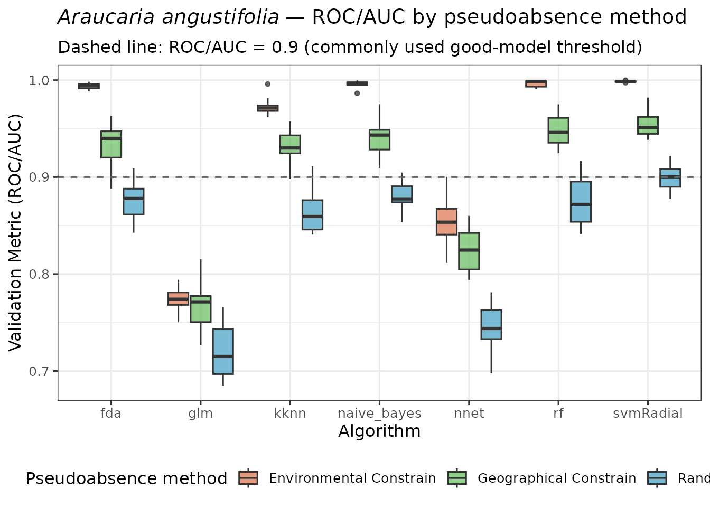
5 · Visualise suitability maps and pseudoabsence data
Ensemble predictions for each method are plotted side by side so that spatial differences in predicted suitability can be assessed visually.
plot_ensembles(sdm_random)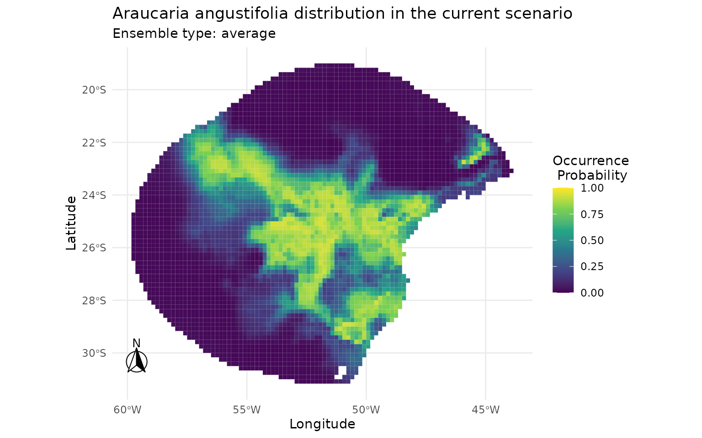
plot_occurrences(sdm_random)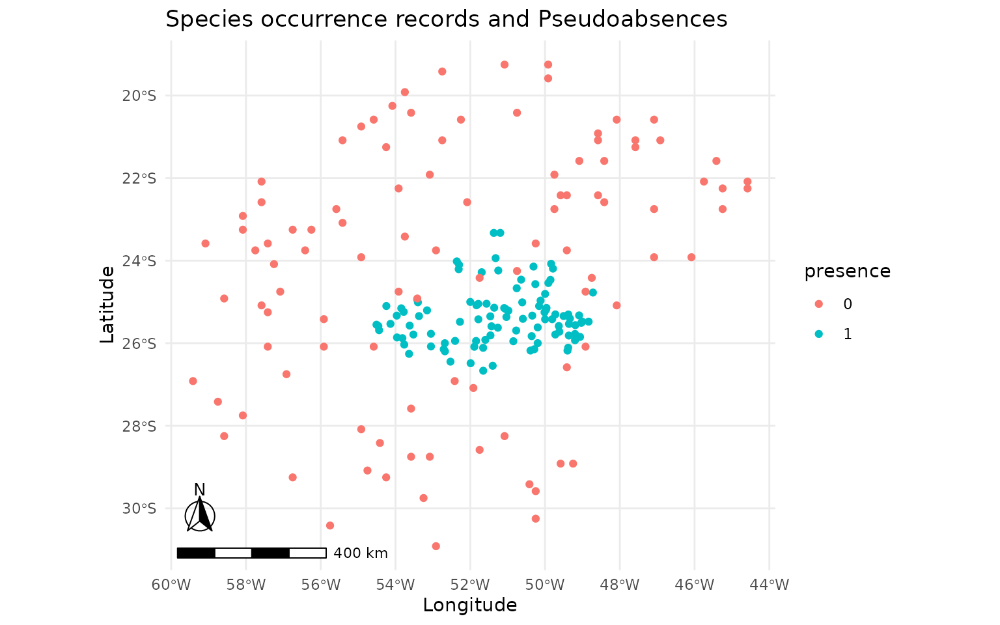
plot_ensembles(sdm_bioclim)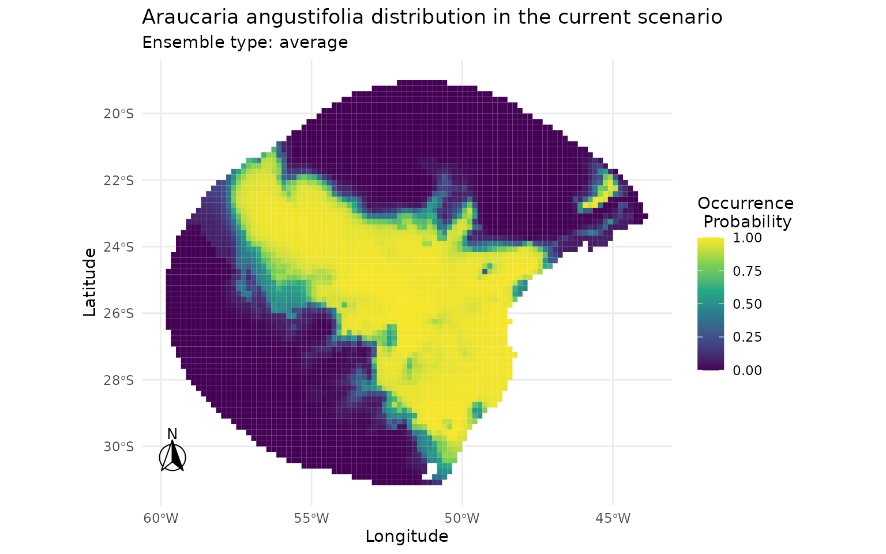
plot_occurrences(sdm_bioclim)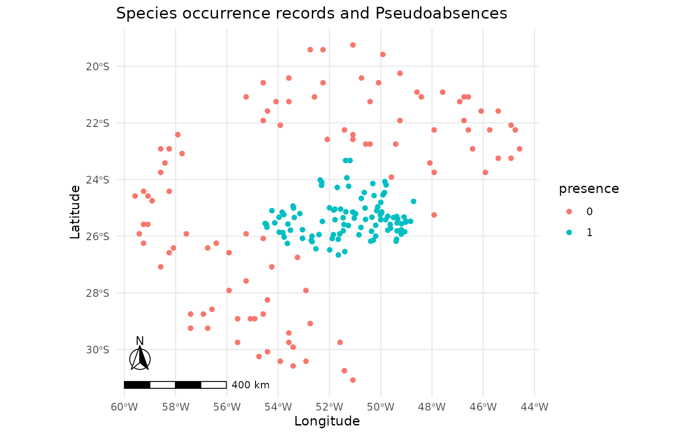
plot_ensembles(sdm_buffer)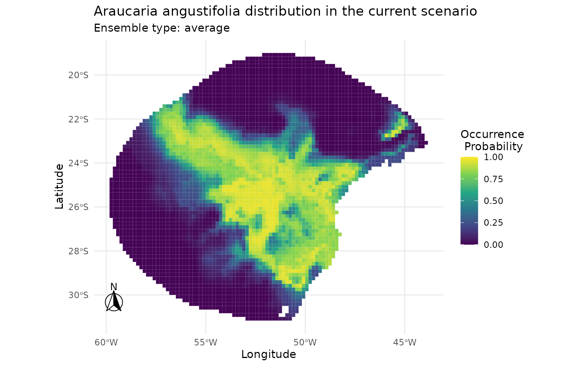
plot_occurrences(sdm_buffer)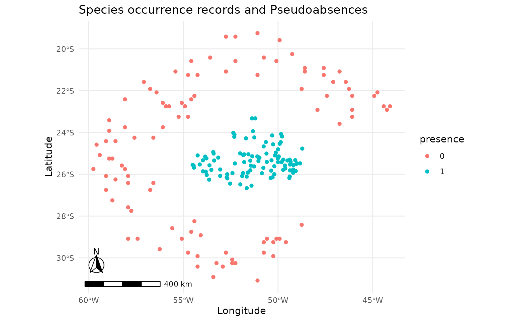
6 · Quantitative comparison of predictions
6.1 Pearson correlation matrix
Prediction values are extracted from all three rasters and organised into a single data frame. Only cells with complete data (no NAs) are retained. Pearson correlations between the three prediction surfaces quantify the degree of agreement. High correlations suggest that the choice of pseudoabsence method has limited impact on the spatial structure of the final map; low correlations flag meaningful sensitivity to this decision.
pred_vals <- data.frame(
random = get_ensembles(sdm_random)[1, 1][[1]][, "average"],
bioclim = get_ensembles(sdm_bioclim)[1, 1][[1]][, "average"],
buffer = get_ensembles(sdm_buffer)[1, 1][[1]][, "average"]
)
cor_mat <- cor(pred_vals, method = "pearson") |>
as.table() |>
as.data.frame()
ggplot2::ggplot(cor_mat, aes(Var1, Var2, fill = Freq)) +
geom_tile(color = "black") +
geom_text(aes(label = round(Freq, 2))) +
scale_fill_gradient2(
low = "#154360", mid = "#1ABC9C", high = "#FFC300",
midpoint = 0.95, limits = c(0.9, 1)
) +
coord_fixed() +
theme_minimal() +
ylab("") +
xlab("")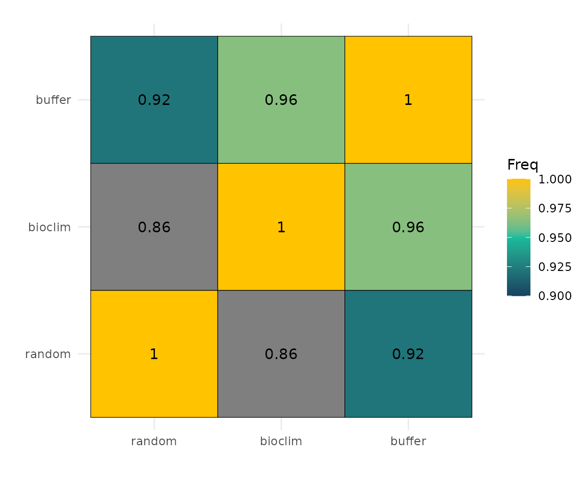
6.2 Scatter plots
Pairwise scatter plots reveal where predictions agree and where they diverge. Points above or below the 1:1 diagonal indicate cells where one method predicts higher suitability than the other.
ggplot(pred_vals, aes(x = random, y = bioclim)) +
geom_hex(bins = 60) +
geom_abline(slope = 1, intercept = 0, colour = "red", linetype = "dashed") +
scale_fill_viridis_c(option = "plasma", name = "Count") +
annotate("text",
x = 0.7, y = 0.1,
label = paste0("r = ", round(cor_mat[2, 3], 3)),
hjust = 0, size = 4, colour = "black",
fontface = "bold"
) +
labs(title = "Random vs. Environmental Constrain", x = "Random", y = "Environmental Constrain") +
theme_minimal(base_size = 11)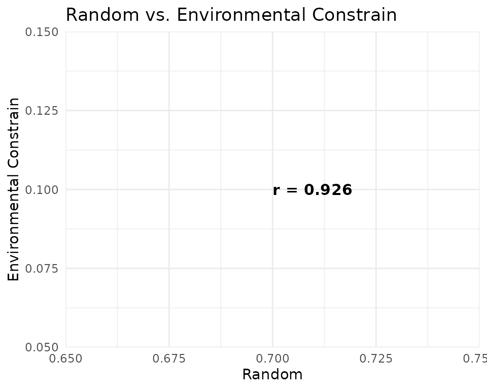
ggplot(pred_vals, aes(x = random, y = buffer)) +
geom_hex(bins = 60) +
geom_abline(slope = 1, intercept = 0, colour = "red", linetype = "dashed") +
scale_fill_viridis_c(option = "plasma", name = "Count") +
annotate("text",
x = 0.7, y = 0.1,
label = paste0("r = ", round(cor_mat[3, 3], 3)),
hjust = 0, size = 4, colour = "black",
fontface = "bold"
) +
labs(title = "Random vs. Geographical Constrain", x = "Random", y = "Geographical Constrain") +
theme_minimal(base_size = 11)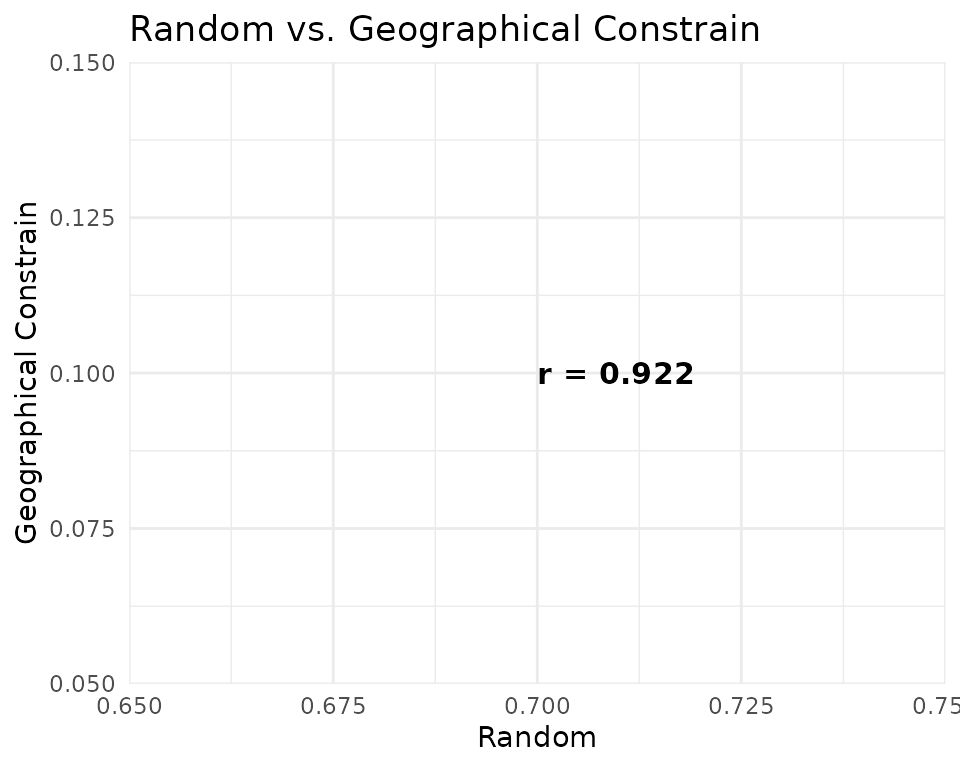
ggplot(pred_vals, aes(x = bioclim, y = buffer)) +
geom_hex(bins = 60) +
geom_abline(slope = 1, intercept = 0, colour = "red", linetype = "dashed") +
scale_fill_viridis_c(option = "plasma", name = "Count") +
annotate("text",
x = 0.7, y = 0.1,
label = paste0("r = ", round(cor_mat[4, 3], 3)),
hjust = 0, size = 4, colour = "black",
fontface = "bold"
) +
labs(
title = "Environmental Constrain vs. Geographical Constrain",
x = "Environmental Constrain", y = "Geographical Constrain"
) +
theme_minimal(base_size = 11)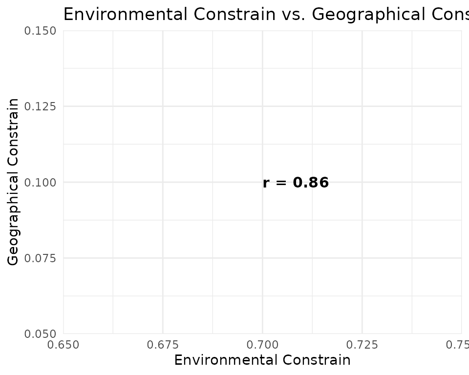
7 · Discussion
Performance differences. Bioclim (SRE), the Environmental Constrain method, tend to generate more ecologically realistic pseudoabsences because they avoid placing pseudoabsence points in areas environmentally similar to presences. This commonly results in inflated but potentially biased ROC/AUC scores compared to the random approach. The same happens with the buffer method, which retrieves pseudoabsences very far from presences, yelding drastically different environmental information.
Spatial congruence. Pearson correlations between prediction surfaces reveal that the three strategies converge on similar spatial patterns, producing similar maps. High correlation (r > 0.95) suggests the spatial signal is robust to pseudoabsence choice.
Predictions differences. Bioclim (SRE), probably due to its more extreme approach, produces the most divergent predictions, with a larger number of cells predicted as highly suitable (values > 0.7) compared to the other two methods. The random method, by contrast, yields more conservative predictions with fewer highly suitable cells. The buffer method produces intermediate predictions, with a moderate number of highly suitable cells.
Session information
## R version 4.6.1 (2026-06-24)
## Platform: x86_64-pc-linux-gnu
## Running under: Ubuntu 24.04.4 LTS
##
## Matrix products: default
## BLAS: /usr/lib/x86_64-linux-gnu/openblas-pthread/libblas.so.3
## LAPACK: /usr/lib/x86_64-linux-gnu/openblas-pthread/libopenblasp-r0.3.26.so; LAPACK version 3.12.0
##
## locale:
## [1] LC_CTYPE=C.UTF-8 LC_NUMERIC=C LC_TIME=C.UTF-8
## [4] LC_COLLATE=C.UTF-8 LC_MONETARY=C.UTF-8 LC_MESSAGES=C.UTF-8
## [7] LC_PAPER=C.UTF-8 LC_NAME=C LC_ADDRESS=C
## [10] LC_TELEPHONE=C LC_MEASUREMENT=C.UTF-8 LC_IDENTIFICATION=C
##
## time zone: UTC
## tzcode source: system (glibc)
##
## attached base packages:
## [1] stats graphics grDevices utils datasets methods base
##
## other attached packages:
## [1] earth_5.3.5 plotmo_3.7.0 plotrix_3.8-14 Formula_1.2-5 caret_7.0-1
## [6] lattice_0.22-9 ggplot2_4.0.3 caretSDM_1.9.7
##
## loaded via a namespace (and not attached):
## [1] RColorBrewer_1.1-3 ECDFniche_0.5 jsonlite_2.0.0
## [4] wk_0.9.5 magrittr_2.0.5 farver_2.1.2
## [7] CoordinateCleaner_3.0.1 rmarkdown_2.31 fs_2.1.0
## [10] ragg_1.5.2 vctrs_0.7.3 kknn_1.4.1
## [13] terra_1.9-34 htmltools_0.5.9 polynom_1.4-1
## [16] curl_7.1.0 raster_3.6-32 s2_1.1.11
## [19] pROC_1.19.0.1 sass_0.4.10 parallelly_1.48.0
## [22] KernSmooth_2.23-26 bslib_0.11.0 htmlwidgets_1.6.4
## [25] naivebayes_1.0.0 desc_1.4.3 plyr_1.8.9
## [28] httr2_1.3.0 lubridate_1.9.5 stars_0.7-2
## [31] cachem_1.1.0 whisker_0.4.1 igraph_2.3.3
## [34] lifecycle_1.0.5 iterators_1.0.14 pkgconfig_2.0.3
## [37] Matrix_1.7-5 R6_2.6.1 fastmap_1.2.0
## [40] future_1.70.0 digest_0.6.39 textshaping_1.0.5
## [43] labeling_0.4.3 randomForest_4.7-1.2 timechange_0.4.0
## [46] httr_1.4.8 abind_1.4-8 compiler_4.6.1
## [49] proxy_0.4-29 withr_3.0.3 S7_0.2.2
## [52] backports_1.5.1 DBI_1.3.0 ecospat_4.1.4
## [55] MASS_7.3-65 lava_1.9.2 classInt_0.4-11
## [58] ggpp_0.6.1 gtools_3.9.5 oai_0.4.0
## [61] ModelMetrics_1.2.2.2 tools_4.6.1 units_1.0-1
## [64] otel_0.2.0 rgbif_3.8.5 future.apply_1.20.2
## [67] nnet_7.3-20 glue_1.8.1 nlme_3.1-169
## [70] grid_4.6.1 sf_1.1-1 stringdist_0.9.17
## [73] checkmate_2.3.4 reshape2_1.4.5 generics_0.1.4
## [76] recipes_1.3.3 maxnet_0.1.4 gtable_0.3.6
## [79] class_7.3-23 tidyr_1.3.2 dismo_1.3-16
## [82] data.table_1.18.4 sp_2.2-1 xml2_1.6.0
## [85] foreach_1.5.2 pillar_1.11.1 stringr_1.6.0
## [88] ggspatial_1.1.10 splines_4.6.1 dplyr_1.2.1
## [91] survival_3.8-6 tidyselect_1.2.1 lemon_0.5.2
## [94] knitr_1.51 gridExtra_2.3.1 stats4_4.6.1
## [97] xfun_0.60 hardhat_1.4.3 checkCLI_1.0
## [100] timeDate_4052.112 stringi_1.8.7 lazyeval_0.2.3
## [103] yaml_2.3.12 evaluate_1.0.5 codetools_0.2-20
## [106] kernlab_0.9-33 tibble_3.3.1 cli_3.6.6
## [109] usdm_2.1-7 rpart_4.1.27 systemfonts_1.3.2
## [112] jquerylib_0.1.4 Rcpp_1.1.2 globals_0.19.1
## [115] rnaturalearth_1.2.0 parallel_4.6.1 pkgdown_2.2.1
## [118] gower_1.0.2 mda_0.5-5 listenv_1.0.0
## [121] viridisLite_0.4.3 ipred_0.9-15 scales_1.4.0
## [124] prodlim_2026.03.11 e1071_1.7-17 purrr_1.2.2
## [127] geosphere_1.6-8 rlang_1.3.0